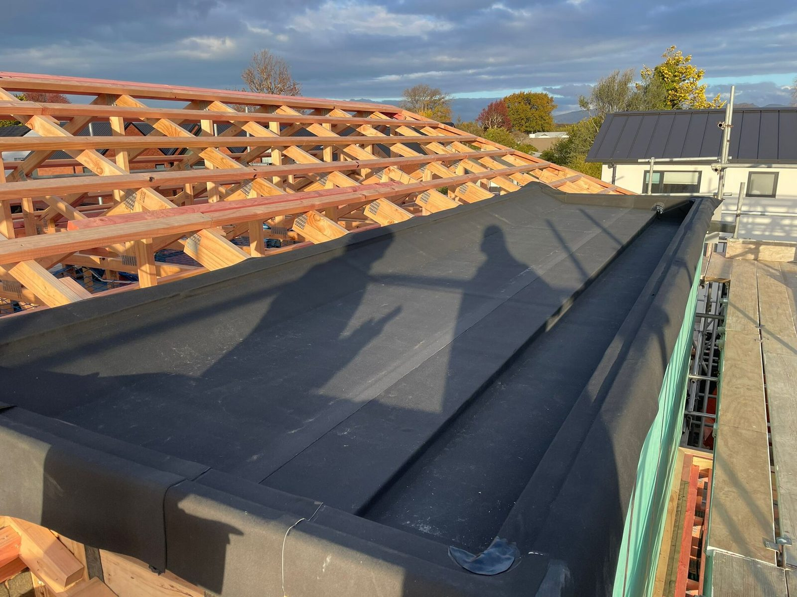

Waterproofing in Cape Town
Most leaks are not in the middle of the roof. They are at a junction, a parapet or a balcony edge that was never detailed properly. We start there.
Where Cape Town roofs actually leak
Cape Town's rain arrives with a north-westerly front that pushes water sideways across roofs and up under tiles. That is why so many leaks here are nowhere near the middle of the roof. They are at the upstand where a flat roof meets a wall, in the box gutter that has silted up, behind the flashing around a chimney, or at the edge of a balcony where the membrane was laid over a dirty surface. Waterproofing fails in two ways. The material itself reaches the end of its life, which is predictable. Or the detail was wrong from the start, which is not, and it is the far more common of the two. A membrane laid without a proper primer, a fall that runs back towards the wall, a tile roof re-flashed with sealant instead of lead. You can redo the surface every year and still have a leak, because the water never entered where the surface is. So we work from the water's point of view. We get into the ceiling void, read moisture through the plaster, and where it is not obvious we run a hose test on the suspect area and watch what happens inside. Only then do we specify a system, because the right answer on a fibre-cement roof is not the right answer on a concrete slab, and neither is the right answer on a wall that has to stay breathable.

Illustrative photograph, not a Plinth job: Luanr36, Wikimedia Commons CC BY-SA 4.0
What we waterproof
Every one of these is a different substrate and a different detail. We treat them as separate jobs rather than one product applied everywhere.
Roof waterproofing
Torch-on membranes, liquid-applied systems and acrylic coatings, chosen for the roof type and the pitch.
Get estimate →Parapets and flashings
Upstands rebuilt to height, flashings replaced in metal rather than sealant, and wall junctions opened and re-detailed.
Get estimate →Balconies and terraces
Falls corrected to the outlet, upstands raised, and the edge detail that fails first rebuilt from scratch.
Get estimate →Box gutters and valleys
Silt removed, outlets resized, and the lining replaced where standing water has already gone through it.
Get estimate →Basement and retaining walls
Positive-side treatment where we can get to it, drainage where we cannot, and a realistic explanation of what each buys you.
Get estimate →Penetrations
Skylights, vents, solar mounts, TV aerials and plumbing stacks. Small openings, disproportionate amount of the damage.
Get estimate →What changes the price of waterproofing
| Factor | Why it moves the number |
|---|---|
| Area and access | A roof you can walk on is cheaper than one that needs scaffolding, a boom or a rope access team. |
| Substrate and condition | Sound concrete takes a coating. A crumbled screed, a rotten timber deck or a failed old membrane has to come off first. |
| Number of details | Ten penetrations and four upstands cost more in labour than 40 square metres of open field, even though the field is bigger. |
| System specified | A torch-on membrane, a liquid system and a cementitious coating sit at different price points and suit different roofs. |
| What is underneath | If water has reached the ceiling, the plaster and insulation may need replacing as well. We price that separately and only if it is needed. |
We quote after a site visit and a moisture check. We do not price waterproofing per square metre over the phone, because the details decide the job.
Get a written waterproofing estimate
Book a free site visit and we will trace the leak before quoting the repair.
How we work
1. Inspect
Roof surface, parapets, flashings, gutters and the inside of the ceiling void if we can reach it.
2. Trace the water
Moisture readings and a controlled hose test on the suspect area, so we know the entry point rather than the exit point.
3. Specify
A written system and prep method matched to the substrate, the pitch and the exposure.
4. Prepare and apply
Failed material stripped, surface primed, every junction detailed before the field is covered.
5. Test and hand over
A final water test, plus photographs of each layer before it was covered, so you know what is under there.
- We find the entry point: A hose test and a moisture meter cost us an hour and save you a second roof.
- Details before surface: Upstands, flashings and outlets get rebuilt before any membrane is laid.
- Photographed at every layer: You get pictures of the prep and the membrane, because once it is covered you cannot check it.
- Honest about what a coating can do: If the substrate has failed, a coating is money spent twice. We will tell you that before you spend it.
The Plinth Standard
- Written scope + fixed price before we start
- Photo updates if you're not on site
- 12-month workmanship warranty on renovations
- Goodwood-based, fast response across Cape Town
Waterproofing across Cape Town
We are based in Goodwood and cover Cape Town within about 25km.